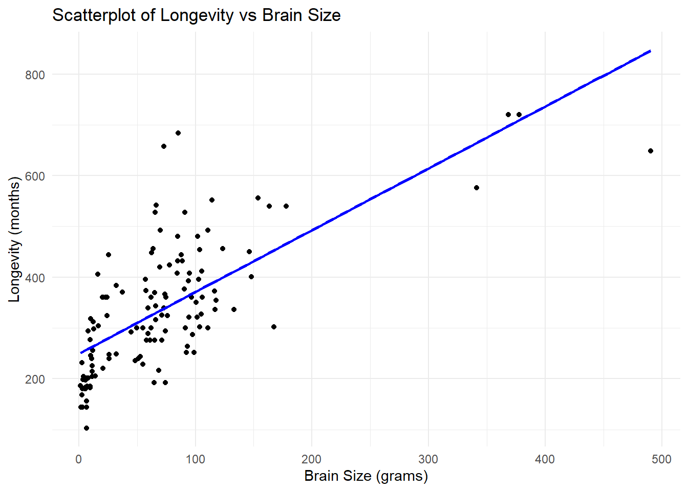
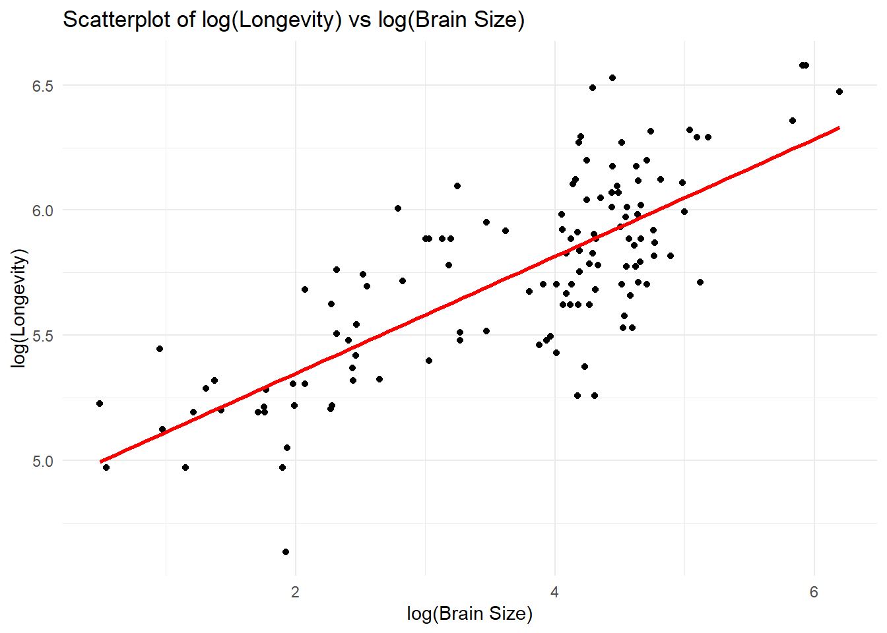
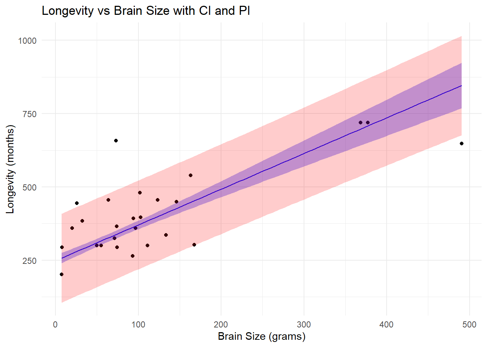
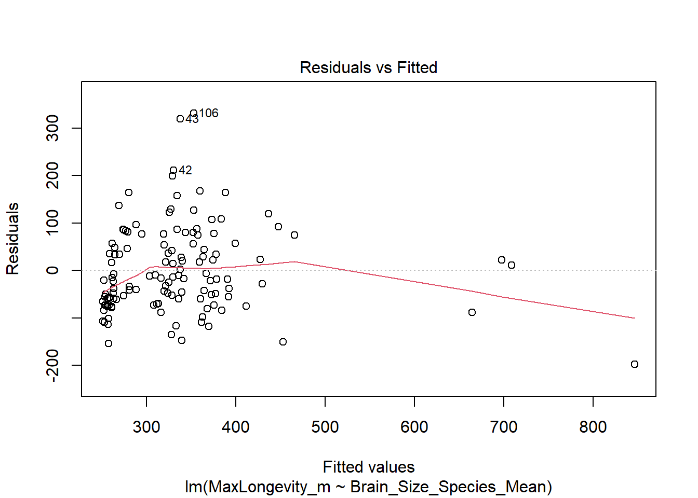
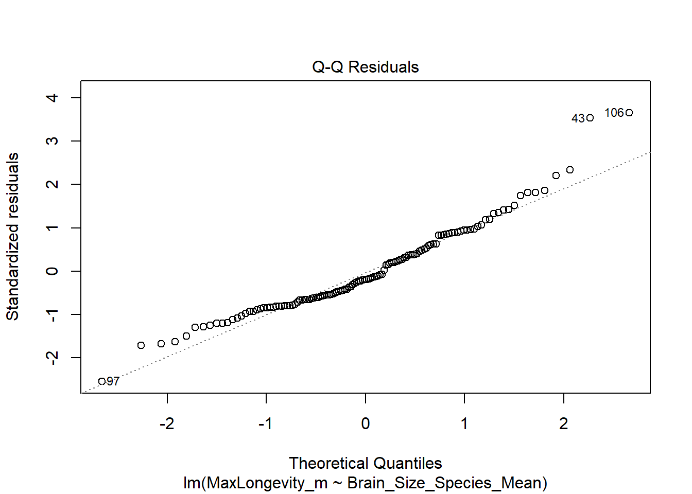
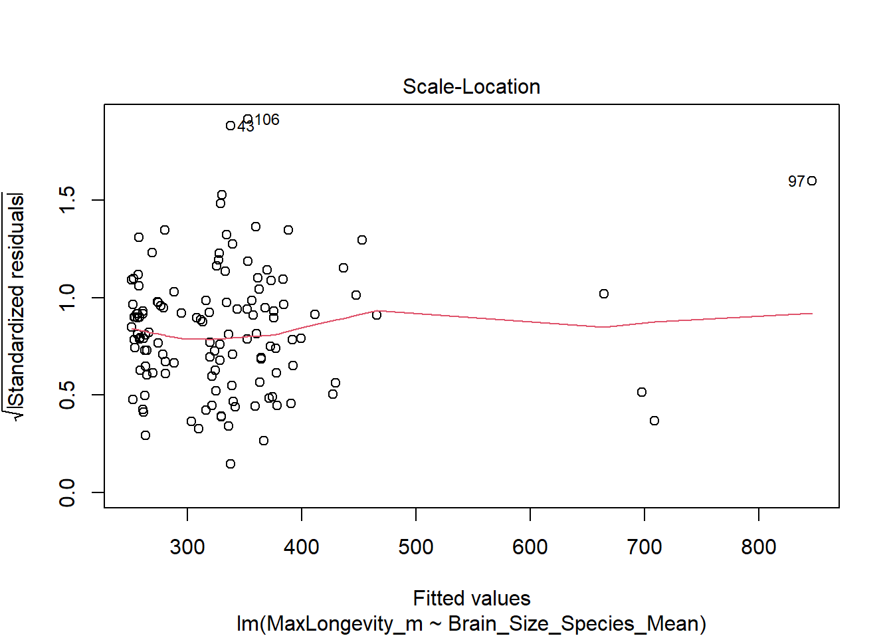
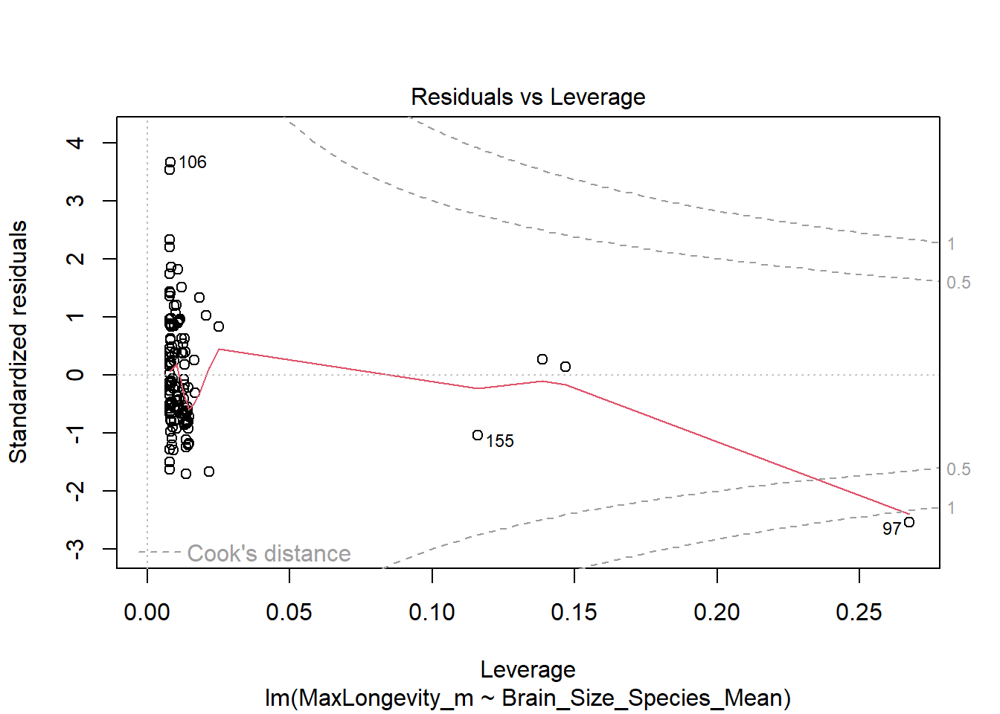
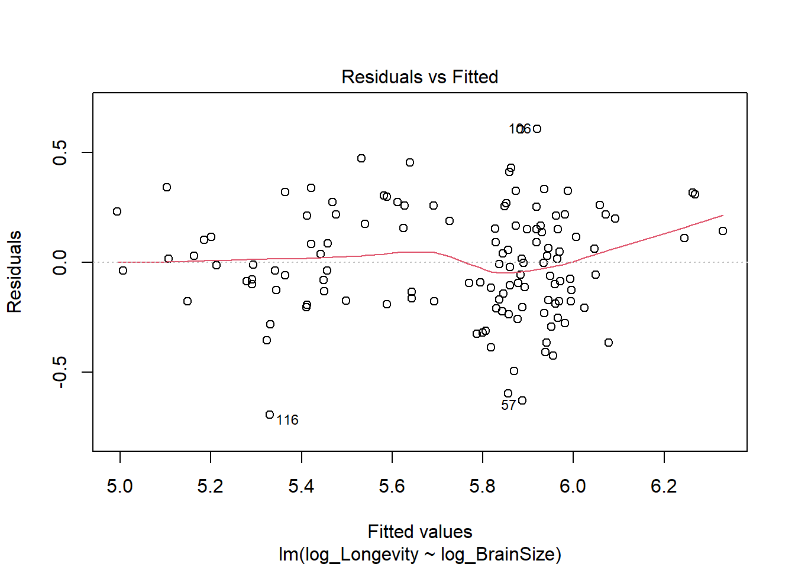
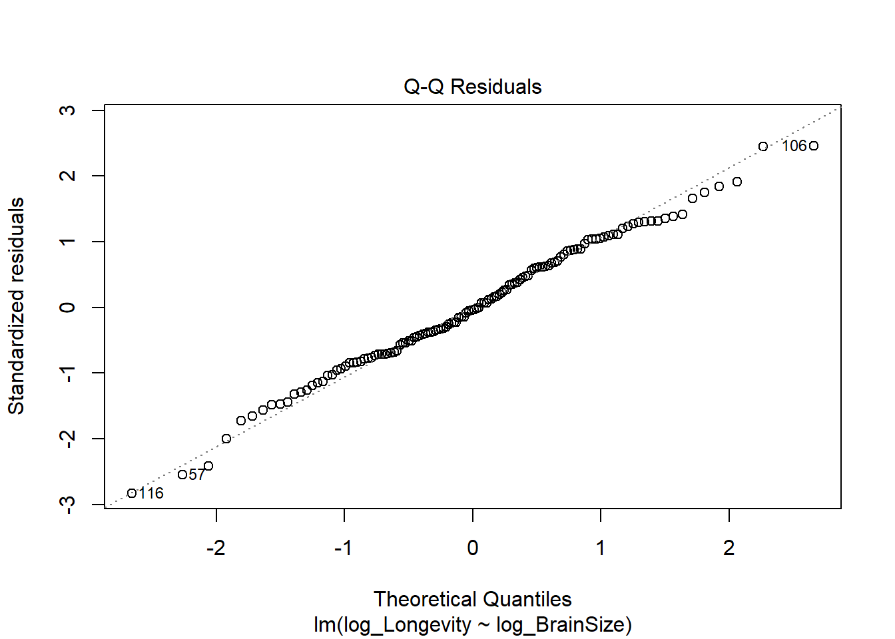
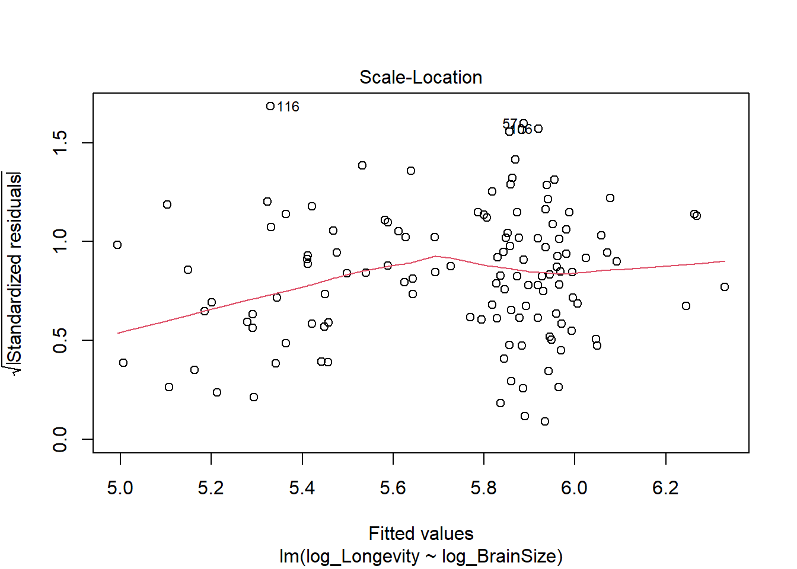

Z.prop.test <- function(p1,n1, p2 = null, n2= null,p0,alternative = "two-sided", conf.level= 0.95) {
# Check if sample 1 meets normal approximation conditions (n*p > 5 and n*(1-p) > 5)
if(n1 * p1 <= 5 || n1 *(1-p1) <= 5){
warning("sample 1 does not meet conditions (n∗p>5
and n∗(1−p)>5")}
#If either p2 or n2 is NULL, perform a one-sample Z-test
if (is.null(p2) || is.null(n2)){
se <- sqrt(p0 * (1 - p0) / n1) #here I am doing z denominator and doing the calculation first then assigning it to se so that when I do call it in z I can just do (p1 - p0)/se just more simplified version basically.
z <- (p1 - p0) / se
ci <- p1 + c(-1, 1) * qnorm((1 + conf.level) / 2) * se # instead of writing basically the same code for CI lower and CI upper where the only difference is the sign change. You can actually use a vector c(-1,1) here the multiplication is applied to the vector where it will perform p1 - Z * se then perform p1 + Z * se
}
else {
if (n2 * p2 <= 5 || n2 *(1-p2) <= 5){
warning("sample 2 does not meet conditions (n∗p>5
and n∗(1−p)>5")
}
# Compute pooled proportion
pooled_p <- (p1 * n1 + p2 * n2) / (n1 + n2)
se <- sqrt(pooled_p * (1 - pooled_p) * (1 / n1 + 1 / n2))
z <- (p1 - p2) / se
ci <- (p1 - p2) + c(-1, 1) * qnorm(1 - (1 - conf.level) / 2) * se
}
# p-value calculation based on alternative hypothesis
p_value <- switch(
alternative,
"two.sided" = 2 * (1 - pnorm(abs(z))),
"less" = pnorm(z),
"greater" = 1 - pnorm(z),
stop("Invalid alternative hypothesis. Use 'two.sided', 'less', or 'greater'.")
)
# # Return a list with test statistics and results
list(
Z = z,
P = p_value,
CI = ci
)
}jzeng21_OriginalHomeworkCode_04
Question 1
Question 2
library(ggplot2)
library(dplyr)
Attaching package: 'dplyr'The following objects are masked from 'package:stats':
filter, lagThe following objects are masked from 'package:base':
intersect, setdiff, setequal, unionk_data <- read.csv("C:\\Users\\jzeng21\\Desktop\\AN588\\AN588_Malfunction_jzeng21\\KamilarAndCooperData.csv")
head(k_data) Scientific_Name Family Genus Species
1 Allenopithecus_nigroviridis Cercopithecidae Allenopithecus nigroviridis
2 Allocebus_trichotis Cercopithecidae Allocebus trichotis
3 Alouatta_belzebul Atelidae Alouatta belzebul
4 Alouatta_caraya Atelidae Alouatta caraya
5 Alouatta_guariba Atelidae Alouatta guariba
6 Alouatta_palliata Atelidae Alouatta palliata
Brain_Size_Species_Mean Brain_Size_Female_Mean Brain_size_Ref
1 58.02 53.70 Isler et al 2008
2 NA NA
3 52.84 51.19 Isler et al 2008
4 52.63 47.80 Isler et al 2008
5 51.70 49.08 Isler et al 2008
6 49.88 48.04 Isler et al 2008
Body_mass_male_mean Body_mass_female_mean Mass_Dimorphism
1 6130 3180 1.928
2 92 84 1.095
3 7270 5520 1.317
4 6525 4240 1.539
5 5800 4550 1.275
6 7150 5350 1.336
Mass_Ref MeanGroupSize AdultMales AdultFemale AdultSexRatio
1 Isler et al 2008 NA NA NA NA
2 Smith and Jungers 1997 1.00 1.00 1.0 NA
3 Isler et al 2008 7.00 1.00 1.0 1.00
4 Isler et al 2008 8.00 2.30 3.3 1.43
5 Isler et al 2008 6.53 1.37 2.2 1.61
6 Isler et al 2008 12.00 2.90 6.3 2.17
Social_Organization_Ref
1
2 Kappeler 1997
3 Campbell et al 2007
4 van Schaik et al. 1999; Kappeler and Pereira 2003; Nunn & van Schaik 2000
5 Campbell et al 2007
6 van Schaik et al. 1999; Kappeler and Pereira 2003; Nunn & van Schaik 2000
InterbirthInterval_d Gestation WeaningAge_d MaxLongevity_m LitterSz
1 NA NA 106.15 276.0 1.01
2 NA NA NA NA 1.00
3 NA NA NA NA NA
4 337.62 187 323.16 243.6 1.01
5 NA NA NA NA NA
6 684.37 186 495.60 300.0 1.02
Life_History_Ref GR_MidRangeLat_dd Precip_Mean_mm Temp_Mean_degC AET_Mean_mm
1 Jones et al. 2009 -0.17 1574.0 25.2 1517.8
2 -16.59 1902.3 20.3 1388.2
3 -6.80 1643.5 24.9 1286.6
4 Jones et al. 2009 -20.34 1166.4 22.9 1193.1
5 -21.13 1332.3 19.6 1225.7
6 Jones et al. 2009 6.95 1852.6 23.7 1300.0
PET_Mean_mm Climate_Ref HomeRange_km2 HomeRangeRef DayLength_km
1 1589.4 Jones et al. 2009 NA NA
2 1653.7 Jones et al. 2009 NA NA
3 1549.8 Jones et al. 2009 NA NA
4 1404.9 Jones et al. 2009 NA 0.40
5 1332.2 Jones et al. 2009 0.03 Jones et al. 2009 NA
6 1633.9 Jones et al. 2009 0.19 Jones et al. 2009 0.32
DayLengthRef Territoriality Fruit Leaves Fauna DietRef1
1 NA NA
2 NA NA
3 NA 57.3 19.1 0.0 Campbell et al. 2007
4 Nunn et al. 2003 NA 23.8 67.7 0.0 Campbell et al. 2007
5 NA 5.2 73.0 0.0 Campbell et al. 2007
6 Nunn et al. 2003 0.6506 33.1 56.4 0.0 Campbell et al. 2007
Canine_Dimorphism Canine_Dimorphism_Ref Feed Move Rest Social
1 2.210 Plavcan & Ruff 2008 NA NA NA NA
2 NA NA NA NA NA
3 1.811 Plavcan & Ruff 2008 13.75 18.75 57.30 10.00
4 1.542 Plavcan & Ruff 2008 15.90 17.60 61.60 4.90
5 1.783 Plavcan & Ruff 2008 18.33 14.33 64.37 3.00
6 1.703 Plavcan & Ruff 2008 17.94 12.32 66.14 3.64
Activity_Budget_Ref
1
2
3 Campbell et al. 2007
4 Campbell et al. 2007
5 Campbell et al. 2007
6 Campbell et al. 2007# Fit a linear model predicting MaxLongevity from Brain Size
model1 <- lm(MaxLongevity_m ~ Brain_Size_Species_Mean, data = k_data)
# Add log-transformed variables for both longevity and brain size
k_data <- k_data %>%
mutate(log_Longevity = log(MaxLongevity_m),
log_BrainSize = log(Brain_Size_Species_Mean))
model2 <- lm(log_Longevity ~ log_BrainSize, data = k_data)
# View model summaries including coefficients and statistics
summary(model1)
Call:
lm(formula = MaxLongevity_m ~ Brain_Size_Species_Mean, data = k_data)
Residuals:
Min 1Q Median 3Q Max
-198.27 -61.92 -17.78 56.16 331.36
Coefficients:
Estimate Std. Error t value Pr(>|t|)
(Intercept) 248.9523 11.1111 22.41 <2e-16 ***
Brain_Size_Species_Mean 1.2180 0.1101 11.06 <2e-16 ***
---
Signif. codes: 0 '***' 0.001 '**' 0.01 '*' 0.05 '.' 0.1 ' ' 1
Residual standard error: 90.91 on 126 degrees of freedom
(85 observations deleted due to missingness)
Multiple R-squared: 0.4928, Adjusted R-squared: 0.4887
F-statistic: 122.4 on 1 and 126 DF, p-value: < 2.2e-16summary(model2)
Call:
lm(formula = log_Longevity ~ log_BrainSize, data = k_data)
Residuals:
Min 1Q Median 3Q Max
-0.6955 -0.1750 -0.0097 0.1788 0.6084
Coefficients:
Estimate Std. Error t value Pr(>|t|)
(Intercept) 4.87895 0.06907 70.63 <2e-16 ***
log_BrainSize 0.23415 0.01781 13.15 <2e-16 ***
---
Signif. codes: 0 '***' 0.001 '**' 0.01 '*' 0.05 '.' 0.1 ' ' 1
Residual standard error: 0.2485 on 126 degrees of freedom
(85 observations deleted due to missingness)
Multiple R-squared: 0.5784, Adjusted R-squared: 0.5751
F-statistic: 172.9 on 1 and 126 DF, p-value: < 2.2e-16# Compute 90% confidence intervals for model coefficients
confint(model1, level = 0.90) 5 % 95 %
(Intercept) 230.540738 267.36379
Brain_Size_Species_Mean 1.035571 1.40041confint(model2, level = 0.90) 5 % 95 %
(Intercept) 4.7644934 4.9934084
log_BrainSize 0.2046396 0.2636595# Extract slope (β₁) and intercept (β₀)
beta0_1 <- coef(model1)[1]
beta1_1 <- coef(model1)[2]
# Scatterplot with regression line
p1 <- ggplot(k_data, aes(x = Brain_Size_Species_Mean, y = MaxLongevity_m)) +
geom_point() +
geom_smooth(method = "lm", se = FALSE, color = "blue") +
geom_text(x = max(k_data$Brain_Size_Species_Mean) * 0.7,
y = max(k_data$MaxLongevity_m) * 0.8,
label = paste0("Longevity = ", round(beta0_1, 2), " + ", round(beta1_1, 2), " * Brain Size"),
color = "black", size = 5) +
labs(title = "Scatterplot of Longevity vs Brain Size",
x = "Brain Size (grams)", y = "Longevity (months)") +
theme_minimal()
print(p1)`geom_smooth()` using formula = 'y ~ x'Warning: Removed 85 rows containing non-finite outside the scale range
(`stat_smooth()`).Warning: Removed 85 rows containing missing values or values outside the scale range
(`geom_point()`).Warning: Removed 213 rows containing missing values or values outside the scale range
(`geom_text()`).
# Extract intercept (β₀) and slope (β₁) for the log-transformed model
beta0_2 <- coef(model2)[1]
beta1_2 <- coef(model2)[2]
# Create a scatterplot for log-transformed variables with a regression line
p2 <- ggplot(k_data, aes(x = log_BrainSize, y = log_Longevity)) +
geom_point() +
geom_smooth(method = "lm", se = FALSE, color = "red") +
geom_text(x = max(k_data$log_BrainSize) * 0.7,
y = max(k_data$log_Longevity) * 0.8,
label = paste0("log(Longevity) = ", round(beta0_2, 2), " + ", round(beta1_2, 2), " * log(Brain Size)"),
color = "black", size = 5) +
labs(title = "Scatterplot of log(Longevity) vs log(Brain Size)",
x = "log(Brain Size)", y = "log(Longevity)") +
theme_minimal()
print(p2)`geom_smooth()` using formula = 'y ~ x'Warning: Removed 85 rows containing non-finite outside the scale range
(`stat_smooth()`).Warning: Removed 85 rows containing missing values or values outside the scale range
(`geom_point()`).Warning: Removed 213 rows containing missing values or values outside the scale range
(`geom_text()`).
# Ensure k_data has no missing values
k_data <- na.omit(k_data) #here I used na.omit to remove any na or non integer values in the data set.
# Generate a sequence of brain sizes from min to max (100 evenly spaced points)
new_data <- data.frame(
Brain_Size_Species_Mean = seq(
min(k_data$Brain_Size_Species_Mean, na.rm = TRUE),
max(k_data$Brain_Size_Species_Mean, na.rm = TRUE),
length.out = 100
)
)
# Predict longevity using Model 1 and compute 90% prediction intervals (PI)
pred <- predict(model1, newdata = new_data, interval = "predict", level = 0.90)
# Compute 90% confidence intervals (CI) for the mean predicted values
conf <- predict(model1, newdata = new_data, interval = "confidence", level = 0.90)
# Merge predictions with new_data
new_data$fit <- pred[, "fit"]
new_data$pi_lower <- pred[, "lwr"]
new_data$pi_upper <- pred[, "upr"]
new_data$ci_lower <- conf[, "lwr"]
new_data$ci_upper <- conf[, "upr"]
# Plot with confidence and prediction intervals
library(ggplot2)
# Add MaxLongevity_m to new_data (use predicted fit as proxy)
new_data$MaxLongevity_m <- new_data$fit # Assign fit as a proxy
# Plot with CI and PI bands
p3 <- ggplot(k_data, aes(x = Brain_Size_Species_Mean, y = MaxLongevity_m)) +
geom_point() +
geom_line(data = new_data, aes(x = Brain_Size_Species_Mean, y = fit), color = "blue") +
geom_ribbon(data = new_data, aes(x = Brain_Size_Species_Mean, ymin = ci_lower, ymax = ci_upper), fill = "blue", alpha = 0.3) +
geom_ribbon(data = new_data, aes(x = Brain_Size_Species_Mean, ymin = pi_lower, ymax = pi_upper), fill = "red", alpha = 0.2) +
labs(
title = "Longevity vs Brain Size with CI and PI",
x = "Brain Size (grams)",
y = "Longevity (months)"
) +
theme_minimal()
print(p3)
# Create new data point
new_species <- data.frame(Brain_Size_Species_Mean = 800)
# Predict Longevity
predict(model1, new_species, interval = "predict", level = 0.90) fit lwr upr
1 1223.345 1021.805 1424.884# Here I want to plot visually see variance in the plots. It will plot 4 graphs per model
plot(model1)



plot(model2)



Since 800g is within the range of observed brain sizes, we can reasonably trust the prediction. However, if it were outside the observed range, extrapolation could be unreliable.
# Compare R² values to assess which model fits better.
# Typically, the log-log model shows a stronger linear relationship in biological data.
summary(model1)$r.squared[1] 0.4927693summary(model2)$r.squared[1] 0.5784088Conclusion
The log-log model 2 is better as there is a more variance in the outcome. Furthermore, based on the R² values and the nature of biological scaling, the log-log model provides a better fit for the data. It captures the nonlinear relationship between brain size and longevity more effectively.